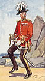

|
 |
||||||||
From the Glasgow Herald, Monday, 5 April, 1880
"THE PIRATES OF PENZANCE,"
(FROM OUR SPECIAL CORRESPONDENT.)
London, Sunday Night,
Last night the new opera which Messrs. Gilbert and Sullivan hope will be accepted as the successor of "H.M.S. Pinafore" was performed for the first time in London at the Opera Comique – Mr. Arthur Sullivan conducting the orchestra and Mr. W. S. Gilbert directing the stage business behind the curtain. The “Pirates of Penzance," after a single performance at Paignton, in Devon, for the purpose of securing the copyright, was produced on New-Year's Eve at the Fifth Avenue Theatre, New York, where its career has only just concluded.
As in previous works by the same authors, the extravagant element enters very largely into their new work, which, if it have a serious purpose at all, may be accepted as a burlesque – firstly of the sensational melodramas, and secondly of the cheap novels of the day. The pirates, usually so fierce and bloodthirsty, are depicted as soft-hearted gentlemen, only too ready to fall in love with all the pretty daughters of the Major-General. He himself wanders about in the full uniform of his rank, and as he enters sings a patter sung in which he declares himself possessed of every accomplishment save those connected with military life. The hero of the story, too, is an admirable parody of the character of the hero of the average penny novelette. Bound apprentice to the pirates until he attains his 21st birthday, he is depicted as a soft-hearted simpleton who believes his nurse to be the finest woman in the world only because he has never set eyes on another, who hates the pirate's calling, but will not give it up until his indentures have legally expired, and who believes that, because he was born on February 29 of leap year, his twenty-first birthday will not arrive till 1940. The daughters of the Major-General, including Mabel, the beloved of the pirate apprentice, are also parodies of the heroines of romance, and not the least hearty laugh was gained last night at the ridiculous situation where the young ladies and the pirates kneel down together and sing a "Hymn to Poetry.”
The end of the first act shows the departure of the Major-General and his daughters, who escape on the plea that he is an orphan, an assertion which is false, so in the second act we find the Major-General kneeling before the tombs of his ancestors seeking to drown the remorse engendered by his commission of the hideous crime of telling a lie. It is in vain, he is reminded, that the tombs are not those of his ancestors at all, and that, indeed, he only bought the property a year ago. He replies that they are "his ancestors by purchase." The pirate apprentice is, however, now out of his time, and having acquired a commission in the Hussars he is about to lead a body of policemen against his former associates, the pirates. The police are not very brave, but sing a chorus, saying that –
| “When we uncomfortable feel; Then we find the wisest thing Is to slap our chests and sing – |
|
| Tarantara!” | |
The Sergeant of Police sings a song in honour of criminals, declaring that —
| "When the enterprising burglar's not a-burgling, | |
| When the cut-throat isn’t occupied in crime, | |
| He loves to hear the little brook a-gurgling, | |
| And listen to the merry village chime.” | |
The situation now thickens. The police are concealed on one side of the chapel and the pirates on the other, the Major-General being in the centre. The pirates suddenly rush out and seize the Major-General, whom they condemn to immediate death for the frightful crime of telling a lie. The police, however, plucking up courage with "Tarantara," proceed to the rescue, but are defeated and taken prisoners. The sergeant, however, has an argument in reserve, and, pinioned as he is, he commands the pirates to yield in "Queen Victoria's name." The Pirate King and his crew at once surrender, saying —
Because with all our faults we love our Queen."
They are about to be removed in custody when the nurse enters and declares —
They are all noblemen who have gone wrong;”
and the General and police kneel before the pirates on the ground that
Because with all our faults we love our House of Peers."
The pirates are then requested to resume their rank, their coronets, and their seats in the Painted Chamber, and the General bestows on them the hands respectively of his daughters. With this the wild but amusing piece of absurdity is brought to a conclusion.
The music is of that composite sort of which Mr. Arthur Sullivan has given us examples in his previous operettas. Parodies of Italian operatic scenas and burlesques of shop songs are to be found side by side with dainty ballads and much admirable part writing. The duet in the second act between the hero and heroine is perhaps one of the most beautiful things of the sort Mr. Sullivan has given us, while the song of the Sergeant “When the enterprising burglar's not a-burgling," and the waltz air of the heroine are almost equally good.
The part of the Major-General was sustained by Mr. George Grossmith, Mr. Barrington was the Sergeant of Police, and Mr. Temple the Pirate Chief. Mr. Power was, however, but a weak representative of the hero, while a new-comer, Miss Marian [sic] Hood, in the part of the heroine, gave promise of better things when she has enjoyed the benefits of further study and experience. Unfortunately Miss Everard, who had studied the role of the nurse, was injured by a plank falling on her head during Wednesday's rehearsal, but her part was filled by Miss Cross.
The work was received with very great enthusiasm, and besides the chief artist, Messrs. Gilbert and Sullivan were twice called before the curtain to bow their acknowledgements.
Page modified 20 August 2011